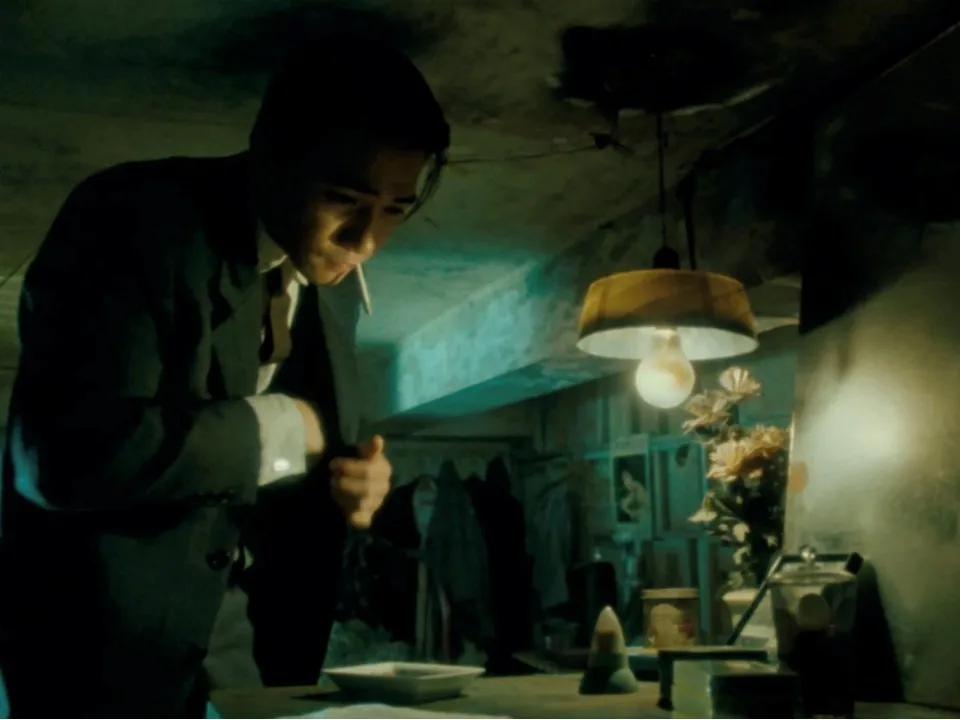
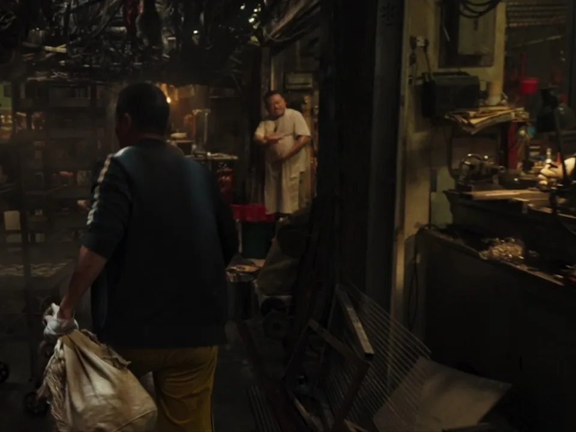
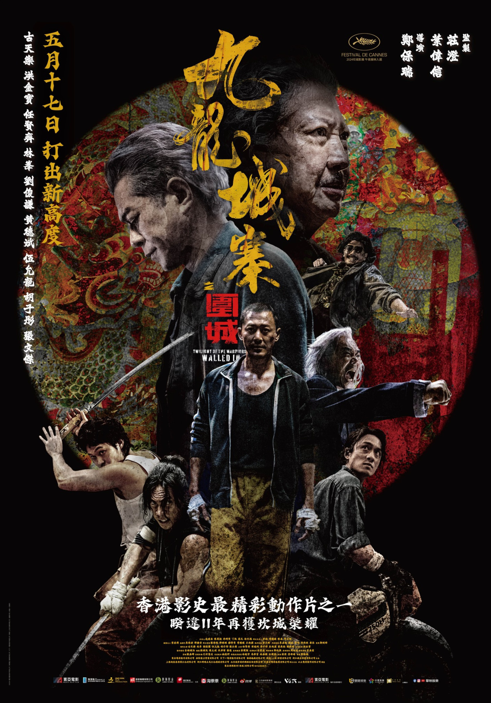
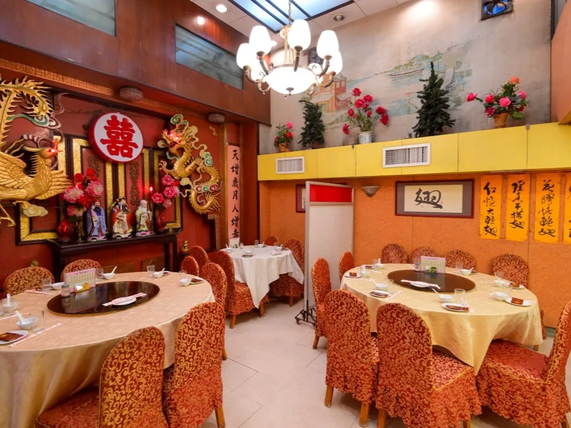
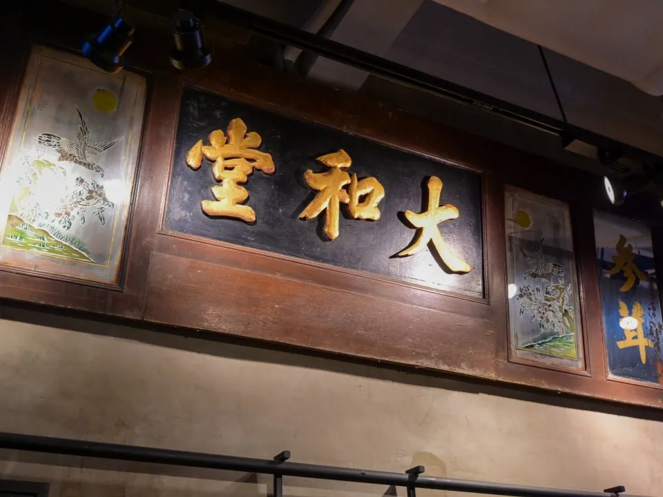
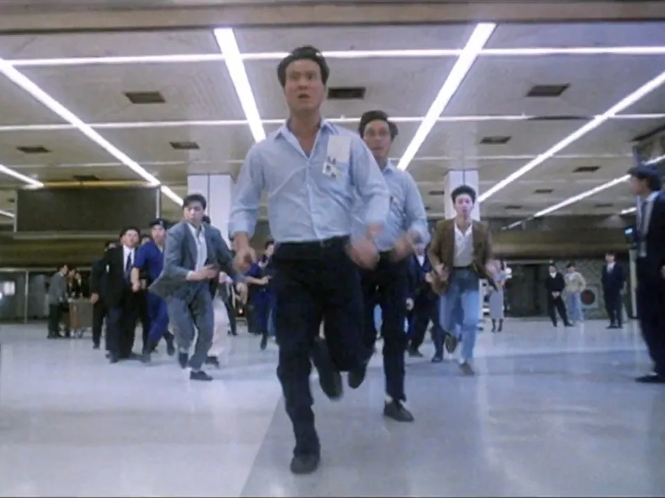

Kowloon: Beyond the myth:The Walled City of Kowloon
Introduction
About this WebsiteTravel Guide
Kowloon Walled City Park Kowloon Walled City Exhibition Nearby Food Spots(1) Nearby Food Spots(2) Kowloon City attractions Derivative Artworksothers
Contact Us
Derivative Artworks of Kowloon Walled City
2026-4-21
Kowloon City brims with local charm and exudes a warm, welcoming vibe, making it a favourite filming location for local filmmakers and a recurring backdrop in Hong Kong cinema. Many well-loved classics have captured the district’s unique character on screen. Embark on a cinematic journey through these iconic film locations and discover how Kowloon City beautifully blends historic landmarks with new attractions.
Table of contents
Days of Being Wild

Kowloon City is steeped in history and is home to numerous heritage sites, including the world-famous Kowloon Walled City. Originally built as a coastal defence fort during the Qing Dynasty, it later became a lawless enclave after the Second World War. The densely populated slum shrouded in mystery provided the perfect backdrop for myriad Hong Kong films. One notable example is Wong Kar-wai’s acclaimed film Days of Being Wild (1990), where the iconic final scene featuring Tony Leung was filmed inside a narrow room in the actual Walled City.
Twilight of the Warriors: Walled Ink

The unique charm of Kowloon Walled City lies in its cluttered shops amid organised chaos.
Although the original structure has been demolished and transformed into Kowloon Walled City
Park, visitors can still uncover traces of its past. Discover this fascinating urban landscape
through Twilight of the Warriors: Walled In (2024), a smash hit in both Hong Kong and Japan.
Immerse yourself in the Kowloon Walled City of the 1980s, where gangs, neighbours and misfits
band together to protect their tightly packed community.

Don’t miss the ‘Kowloon Walled City: A Cinematic Journey’ Movie Set Exhibition. There are plenty of photo opportunities across meticulously recreated movie sets, including iconic spots such as No.7 Restaurant, where you can find hidden autographs from the cast, Lung Shing Barber, corner grocers, bone-setting clinics, narrow-alley tailor shops and retro plastic plants. Step into these thoughtfully rebuilt sets and vividly relive the atmosphere of the one-of-a-kind Kowloon Walled City.The Days of Being Dumb
Not far from Kowloon Walled City Park lies the tranquil Stone Houses Family Garden, a site steeped in history. This area was once a bustling squatter settlement after the Second World War and later became a hub for film studios during Hong Kong’s golden age of cinema. The Stone Houses, nestled beneath lush trees, are the only remaining structures of the former Hau Wong Temple New Village, built between 1945 and 1949 using granite blocks and traditional roofing techniques. Featured in the comedy The Days of Being Dumb (1992), the site has since been revitalised as a multi-purpose venue housing a cafe, exhibition spaces and a heritage centre, inviting visitors to explore Hong Kong’s rich cultural past.
The Goldfinger

Lok Hau Fook Restaurant, a long-standing Chiu Chow eatery on Hau Wong Road, has been a fixture in Kowloon City for over half a century. It’s one of the few restaurants in Hong Kong that still hosts traditional wedding banquets with the classic dragon and phoenix decorations. This is a nostalgic backdrop featured in many films, including The Goldfinger (2023). Starring Tony Leung and Andy Lau, the film depicts a major corporate fraud in the 1980s. A key scene in the film, which portrays a newborn’s full-month banquet, where Lau plays an ICAC senior investigator, was filmed at Lok Hau Fook. Fans of cinema can enjoy traditional Chiu Chow cuisine while visiting this unique movie landmark.
Dry Wood Fierce Fire

Many charming old shops hidden around Kowloon City District naturally evoke a cinematic atmosphere. In the romantic comedy Dry Wood Fierce Fire (2002), starring Miriam Yeung and Louis Koo, the heroine’s family has run a medical clinic for four generations. The filming location was Tai Wo Tang, a traditional Chinese medicine shop founded in 1932 in a pre-war tenement building. Originally a clinic, it later became a Chinese herbalist store and has now been transformed into a cafe. Inside, you’ll find the century-old medicine cabinet and the gold-lettered signboard featured in the film.
The Killer

Kowloon City’s legacy extends beyond the Walled City to the old Kai Tak Airport, which recorded its first flight in 1925, marking the beginning of Hong Kong’s aviation history. Due to its proximity to high-rise buildings, the Kai Tak Airport was considered one of the ten most dangerous airports in the world. Visitors can revisit scenes from the old airport in award-winning films like Love Unto Waste (1986) and John Woo’s classic The Killer (1989). In The Killer, Chow Yun-fat and Sally Yeh’s characters are pursued in Kai Tak Airport. Today, the site has been redeveloped into Kai Tak Sports Park, where visitors can explore the ‘World Flyer’ zone and trace the airport’s historic footprint by visiting the preserved Precision Approach Radar Building, which once guided aircraft.
Related content